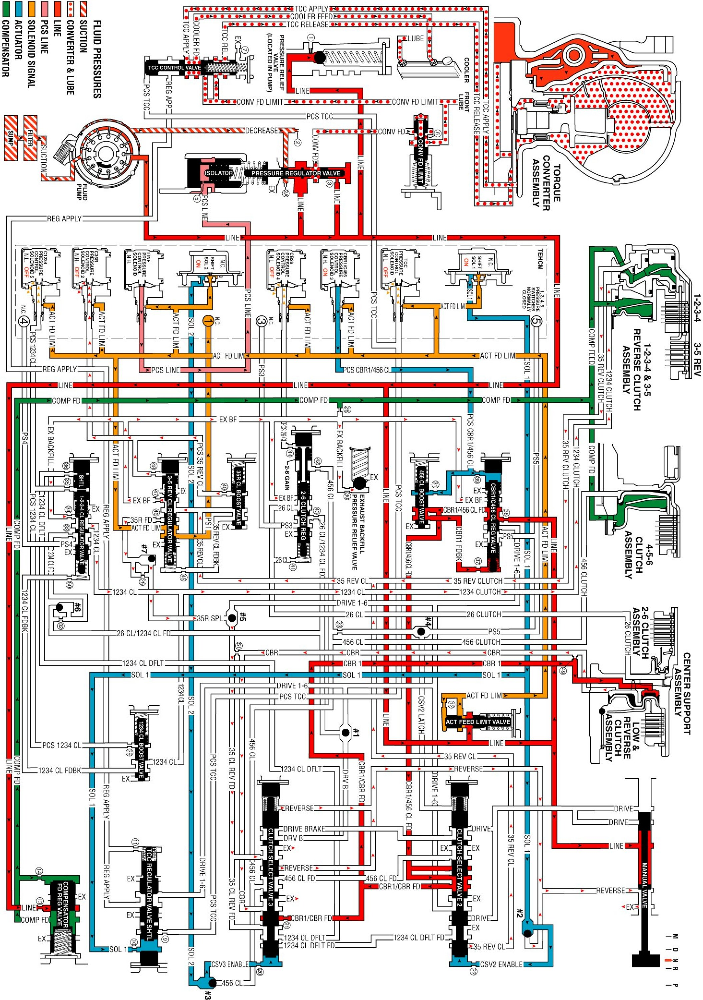

Neutral - Engine Running
Neutral - Engine Running
When the gear selector is moved to the Neutral (N) position, the hydraulic and electrical system operation is identical to Park (P) range. However, if Neutral is selected after the vehicle was operating in Reverse (R), the normally high C35R pressure control solenoid 2 is commanded OFF and the following changes would occur in the hydraulic system:
3-5 Reverse Clutch Releases
Manual Valve
The manual valve is moved to the Neutral position and blocks line pressure from entering the reverse and drive fluid circuits. The reverse fluid from the #2 ball check valve and clutch select valve 3 is opened to an exhaust passage at the manual valve.
C35R Pressure Control Solenoid 2
The C35R pressure control solenoid 2 is commanded OFF allowing PCS 3-5 reverse clutch fluid from the 3-5 reverse clutch boost valve and 3-5 reverse clutch regulator valve to exhaust.
3-5 Reverse Clutch Boost Valve
The 3-5 reverse boost valve spring force moves the valve to allow 3-5 reverse clutch feedback fluid from the 3-5 reverse clutch regulator valve to enter the 3-5 reverse clutch circuit and exhaust.
3-5 Reverse Clutch Regulator Valve
The 3-5 reverse clutch regulator valve spring force moves the valve to allow 3-5 reverse clutch fluid from the 3-5 reverse clutch and clutch select valve 2 to pass through the valve and enter the exhaust backfill fluid circuit. The 3-5 reverse clutch fluid then enters the exhaust backfill fluid circuit and is routed through orifice #30 to the exhaust backfill pressure relief valve where excess pressure is exhausted.
3-5 Reverse Clutch
The 3-5 reverse clutch spring force combined with a force from the compensator moves the 3-5 reverse clutch piston to release the 3-5 reverse clutch plates and force 3-5 reverse clutch fluid to exhaust from the 1-2-3-4 and 3-5 reverse clutch housing. The 3-5 reverse clutch fluid is then routed to the 3-5 reverse clutch regulator valve allowing the 3-5 reverse clutch to release.
Clutch Select Valve 3
When reverse fluid exhausts through the manual valve, CSV3 enable fluid moves the valve against clutch select valve 3 spring force. The 3-5 reverse feed fluid is routed around #7 ball check valve and into the 3-5 reverse supply circuit. The 3-5 reverse supply fluid is routed around #5 ball check valve and into the 3-5 clutch reverse feed circuit and exhausts at the clutch select valve 3.
Neutral - Engine Running
Neutral - Engine Running:
